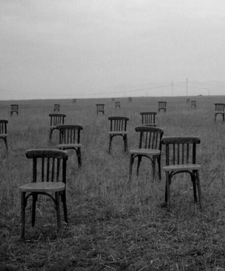

Kita sering mengatakan bahwa kita bebas.
Bebas memilih apa yang kita inginkan.
Bebas menentukan siapa diri kita.
Bebas memilih pekerjaan, pasangan, tempat tinggal, bahkan kehidupan seperti apa yang ingin kita jalani.
Tetapi ada sesuatu yang jarang kita tanyakan:
Dari mana datangnya keinginan kita?
Kita sibuk mempertanyakan apakah kita bebas memilih, tetapi jarang mempertanyakan siapa yang menentukan apa yang ingin kita pilih.
Seorang anak tumbuh dengan banyak kemungkinan.
Kemudian dunia mulai mempersempitnya.
Keluarga mengatakan apa yang baik.
Sekolah menentukan apa yang harus dipelajari.
Masyarakat menentukan apa yang dianggap normal.
Lingkungan menentukan apa yang pantas.
Uang menentukan apa yang mungkin.
Dan perlahan, kita belajar membedakan mana yang boleh dan mana yang tidak.
Kita menyebutnya kedewasaan.
Mungkin memang begitu.
Tetapi mungkin sebagian darinya adalah proses belajar untuk hidup di dalam batas yang tidak pernah kita buat sendiri.
Kita berkata:
“Aku ingin menjadi ini.”
Tetapi mungkin kita menginginkannya karena sejak kecil kita diberitahu bahwa itulah kehidupan yang baik.
Kita berkata:
“Aku ingin sukses.”
Tetapi dari mana kita mendapatkan definisi sukses?
Kita berkata:
“Aku ingin kaya.”
Tetapi siapa yang mengajarkan kita bahwa lebih banyak uang berarti kehidupan yang lebih baik?
Kita berkata:
“Aku ingin dicintai.”
Tetapi mengapa kita begitu takut hidup tanpa pasangan?
Bahkan keinginan kita pun memiliki sejarah.
Ia tidak muncul begitu saja.
Ia dibentuk oleh apa yang kita lihat, apa yang kita dengar, siapa yang kita temui, dan dunia tempat kita tumbuh.
Mungkin kebebasan bukan tentang memiliki banyak pilihan.
Bayangkan seseorang berdiri di depan seratus pintu.
Ia boleh memilih pintu mana pun.
Apakah ia bebas?
Mungkin.
Tetapi bagaimana jika semua pintu itu dibangun oleh orang lain?
Bagaimana jika seseorang menentukan di mana pintu-pintu itu berada?
Bagaimana jika beberapa pintu sejak awal tidak boleh dibuka?
Dan bagaimana jika ia bahkan tidak tahu bahwa ada pintu lain di luar ruangan itu?
Ia masih bisa memilih.
Tetapi apakah ia benar-benar bebas?

Kita sering mengira kebebasan berarti:
“Aku bisa melakukan apa pun yang aku mau.”
Tetapi manusia tidak pernah benar-benar hidup tanpa batas.
Kita dibatasi oleh tubuh.
Oleh waktu.
Oleh uang.
Oleh hukum.
Oleh keluarga.
Oleh tempat kita dilahirkan.
Oleh masa lalu.
Bahkan oleh diri kita sendiri.
Kita bisa ingin pergi ke mana pun, tetapi tidak semua tempat bisa kita datangi.
Kita bisa ingin menjadi siapa pun, tetapi tidak semua kemungkinan tersedia bagi kita.
Kita bisa ingin mengubah masa lalu, tetapi waktu tidak pernah berjalan mundur.
Mungkin kebebasan manusia selalu datang bersama keterbatasan.
Dan justru karena itu, pertanyaan tentang kebebasan menjadi jauh lebih rumit.
Ada satu bentuk keterbatasan yang paling sulit dilihat.
Kita bisa terpenjara oleh sesuatu yang kita sukai.
Kita bisa menjadi budak ambisi.
Budak pengakuan.
Budak uang.
Budak hubungan.
Budak citra diri.
Dan karena kita memilihnya sendiri, kita sering tidak menyadari bahwa kita sedang terikat.
Tidak ada rantai.
Tidak ada penjara.
Tidak ada seseorang yang memaksa.
Hanya keinginan yang terus mengatakan:
“Belum cukup.”
Mungkin itulah bentuk penjara yang paling sempurna.
Ketika seseorang tidak merasa sedang dipenjara.
Tetapi apakah itu berarti kita sama sekali tidak bebas?
Tidak juga.
Mungkin kebebasan yang sebenarnya bukanlah kemampuan untuk hidup tanpa batas.
Mungkin kebebasan adalah kemampuan untuk menyadari batas-batas tersebut.
Mengetahui mengapa kita menginginkan sesuatu.
Mengetahui dari mana keyakinan kita berasal.
Mengetahui bahwa sebagian dari diri kita dibentuk oleh dunia, tetapi tidak berarti kita harus selamanya menjadi hasil dari pembentukan itu.
Kita mungkin tidak bisa memilih dari mana kita memulai.
Tetapi mungkin kita masih bisa memilih ke mana kita pergi setelah menyadarinya.
Dan mungkin di sinilah kebebasan menjadi sesuatu yang lebih sederhana.
Bukan kebebasan untuk mendapatkan segala sesuatu.
Bukan kebebasan untuk melakukan apa pun.
Tetapi kebebasan untuk berkata:
“Aku tahu mengapa aku memilih ini.”
Bahkan jika pilihan itu sulit.
Bahkan jika pilihan itu tidak populer.
Bahkan jika pilihan itu membuat kita kehilangan sesuatu.
Karena mungkin manusia tidak pernah benar-benar bebas dari dunia.
Kita hanya bisa menjadi lebih sadar tentang bagaimana dunia hidup di dalam diri kita.
Pada akhirnya, kita mungkin tidak akan pernah menemukan kebebasan yang sempurna.
Kita tetap akan dibentuk oleh keluarga.
Oleh masyarakat.
Oleh keadaan.
Oleh masa lalu.
Oleh tubuh yang kita miliki.
Oleh dunia yang tidak pernah meminta izin sebelum menentukan tempat kita dilahirkan.
Tetapi kesadaran memberikan satu celah kecil.
Sebuah ruang untuk berhenti.
Untuk bertanya.
Untuk melihat kembali kehidupan yang selama ini kita jalani dan berkata:
“Apakah ini benar-benar pilihanku?”
Mungkin kita tidak akan selalu bisa mengubah jawabannya.
Tetapi setidaknya, untuk pertama kalinya, kita tahu bahwa kita sedang memilih.
Dan mungkin,
kebebasan tidak dimulai ketika semua batas menghilang.
Kebebasan dimulai ketika kita akhirnya menyadari bahwa batas itu ada.